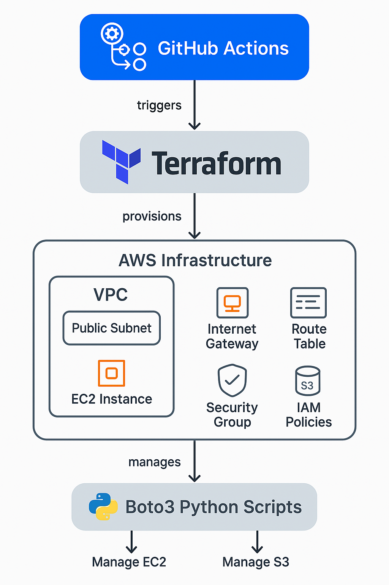

☁️ AWS Infrastructure Automation with Terraform, GitHub Actions & Boto3
A comprehensive project demonstrating the automation of AWS infrastructure using Terraform, continuous deployment with GitHub Actions, and resource management through Python scripts utilizing Boto3.
Project Overview
In this project, I automated the provisioning and management of AWS resources to simulate real-world cloud engineering workflows. Utilizing Terraform for Infrastructure as Code (IaC), GitHub Actions for continuous integration and deployment, and Boto3 for scripting AWS resource management, this project showcases a full-cycle DevOps approach.
Architecture Overview
The architecture comprises a VPC with public and private subnets, an internet gateway, route tables, and security groups. An EC2 instance resides within the public subnet, and an S3 bucket is configured for storage needs. IAM roles and policies are established to manage permissions. GitHub Actions automates the deployment process, while Boto3 scripts handle resource management post-deployment.
Implementation Steps
1 Set Up AWS Infrastructure with Terraform:
- Defined VPC, subnets, route tables, internet gateway, security groups, EC2 instance, S3 bucket, and IAM roles in Terraform configuration files.
- Utilized variables for dynamic configuration and scalability.


2 Automate Deployment with GitHub Actions:
- Configured GitHub Actions workflow to trigger on code commits.
- Integrated Terraform commands (init, plan, apply) into the CI/CD pipeline for automated infrastructure deployment.


3 Manage Resources with Boto3 Scripts:
- Developed Python scripts using Boto3 to:
- Start, stop, and describe the EC2 instance.
- List and delete objects within the S3 bucket.


Project Results
- Successfully automated the deployment of AWS infrastructure using Terraform and GitHub Actions.
- Implemented Boto3 scripts for efficient resource management, reducing manual intervention.